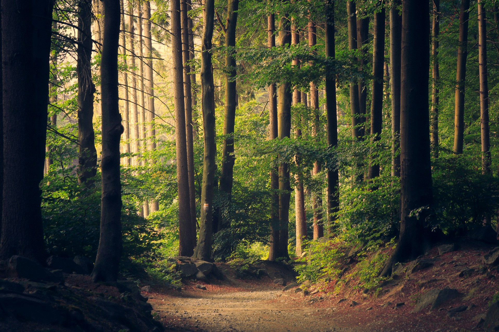

Welcome to our website where you can get information about Protected Area Issues
Protected areas face a myriad of challenges that threaten their effectiveness in conserving biodiversity and ecosystems. Encroachment by human activities, such as illegal logging, poaching, and unsustainable development, undermines the intended conservation goals. Climate change further exacerbates these issues, altering habitats and affecting the delicate balance of ecosystems within these protected zones. Additionally, inadequate funding and management resources contribute to the struggle in safeguarding these areas, highlighting the urgent need for comprehensive strategies and global cooperation to address these multifaceted challenges.
Protected areas play a crucial role in maintaining ecological balance. Explore the following websites to learn more about related issues:
- UNEP-WCMC - World Conservation Monitoring Centre
- Conservation International - Parks and Reserves
- National Geographic - National Parks
- Cpaws - Parks & Protected Areas
- protected planat - world Protected Areas
- National Park Service
Collective efforts are pivotal in supporting and preserving protected areas. Individuals can contribute by raising awareness about the importance of these zones for biodiversity conservation and environmental health. Engaging in sustainable practices, such as responsible tourism and adopting eco-friendly habits, helps mitigate human impact on these areas. Supporting organizations dedicated to conservation through donations or volunteer work can provide crucial resources. Governments, communities, and businesses can collaborate to implement and enforce policies that ensure the effective protection of these areas. Through a united front, we can foster a shared commitment to the preservation of protected areas, securing the future of our planet's ecological diversity.